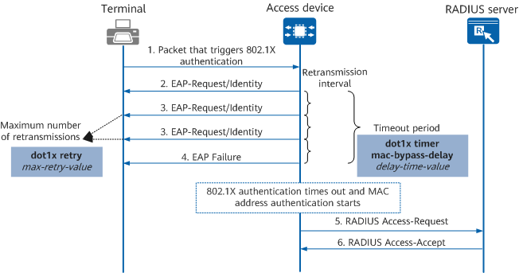

Overview
MAC address bypass authentication allows an access device to initiate MAC address authentication if 802.1X authentication fails first. MAC address bypass authentication is recommended when an access device has both PCs and dumb terminals such as printers and fax machines connected. In this case, MAC address authentication can be performed for the terminals if 802.1X authentication fails.
Compared with MAC address authentication, MAC address bypass authentication involves 802.1X authentication and takes a longer time. If an access device has only dumb terminals connected, MAC address authentication is recommended to shorten the authentication time.
Authentication Process
If PCs and dumb terminals such as printers and fax machines are connected to interfaces of an access device and only 802.1X authentication is configured, printers and fax machines will fail authentication. In this case, MAC address bypass authentication can enable these dumb terminals that do not support 802.1X authentication to access the network through MAC address authentication. Figure 1 shows the MAC address bypass authentication process.
Figure 1 MAC address bypass authentication process
- When an interface of the access device that has MAC address bypass authentication enabled receives a packet from the terminal, the access device first performs 802.1X authentication on the terminal.
- The access device sends an EAP-Request/Identity packet to request the user's client program to send the entered user name.
- If the access device does not receive any response packet within the retransmission interval, it retransmits the EAP-Request/Identity packet until the configured maximum number of retransmissions is reached.
- If all requests go unanswered, the access device sends an EAP Failure packet to the terminal.
- In this case, 802.1X authentication times out. The access device sends the user name and password to the RADIUS server for MAC address authentication.
- The RADIUS server compares the received user name and password with the locally saved user name and password. If they are the same, MAC address authentication succeeds and the RADIUS server sends a RADIUS Access-Accept packet to the access device.